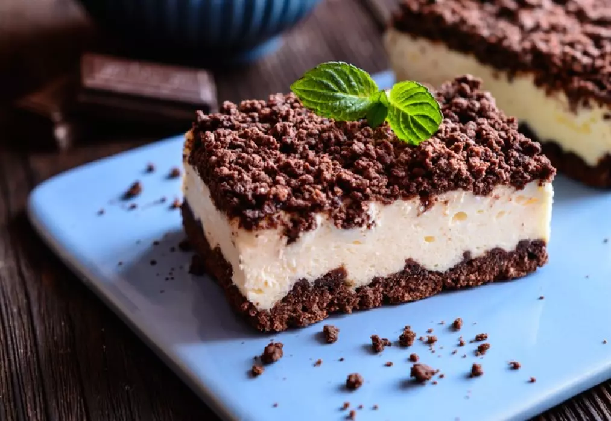
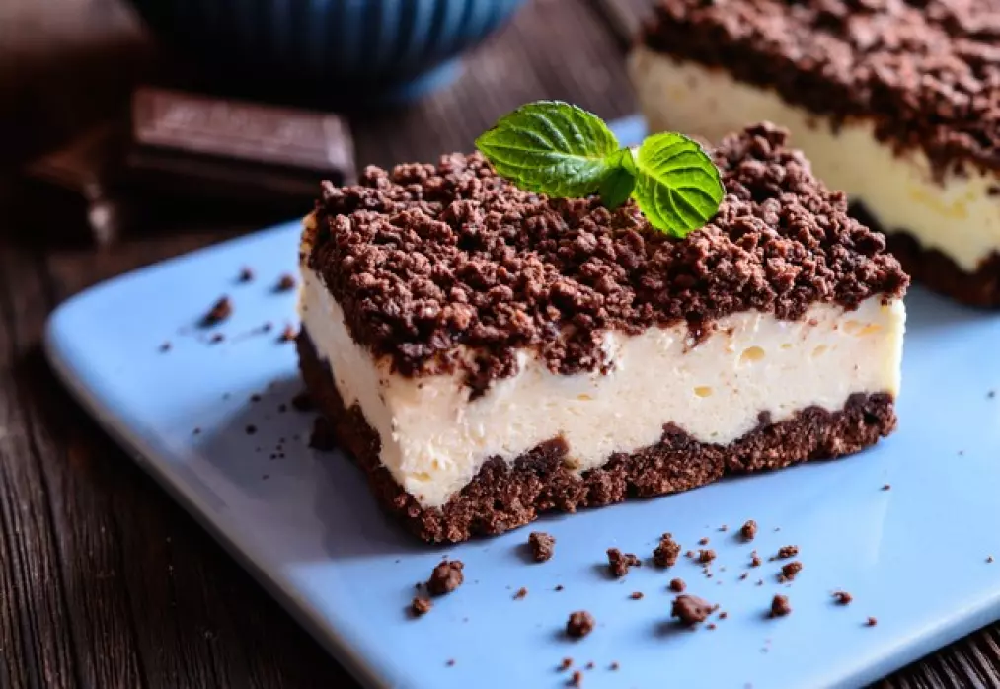
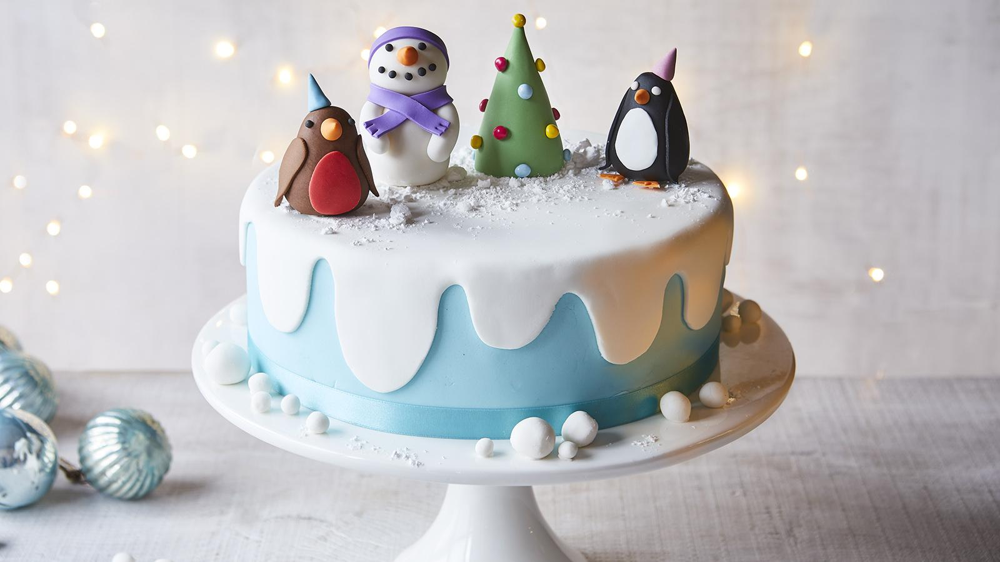
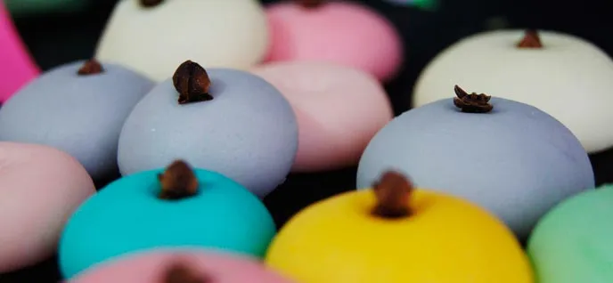
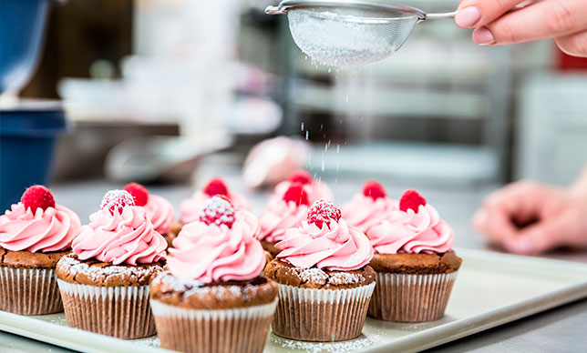
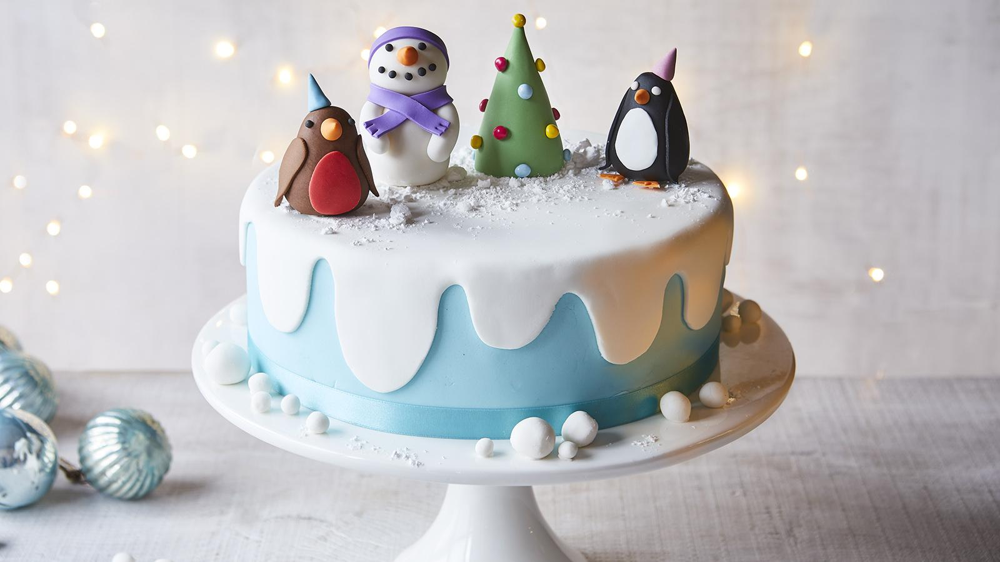
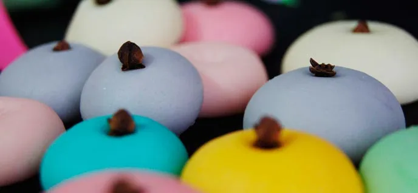
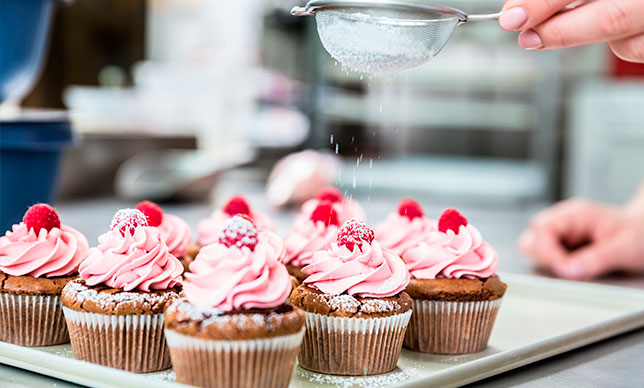

Información
Somos una empresa de respotería especializada en la decoración de pasteles, cupcakes, galletas y otros hermosos y deliciosos postres. También hacemos nuestros bizcochos y masas desde cero, pero nuestra especialidad siempre será la decoración de estos. Queremos compartir nuestros conocimientos que hemos ido perfeccionando con el paso de los años y la práctica y que tu los puedas implementar de manera muy sencilla, sin utencilios caros o técnicas profesionales y dificiles, de manera divertida y que obtengas resultados hermosos. Para eso te queremos mostrar algunas de nuestras tecnicas favoritas y muchas fotos de los resultados que hemos logrado con ellas, para que las practiques canto antes
 

 






Esperamos que sean de lo más convenientes para tus necesidades y queremos invitarte a que si tienes alguna duda o sugerencia sobre alguna técnica o receta nos comentes en nuestro foro a continuación